I've been lucky to go on a few really great trips lately. Here are some highlights!
The Ozarks
Bentonville in the Ozarks has some world-class mountain biking trails on top of a pretty nice museum. It's not too expensive and has what people from Kansas can sort of call mountains.
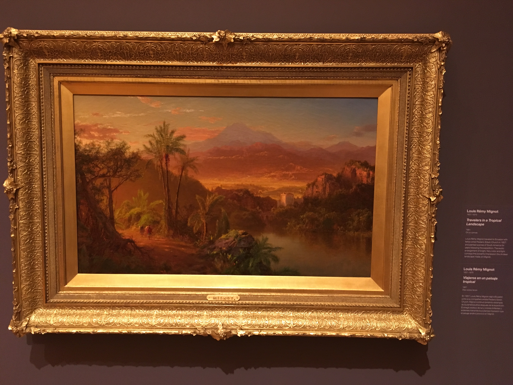
This one really stood out to me. It would be a good wallpaper pic.
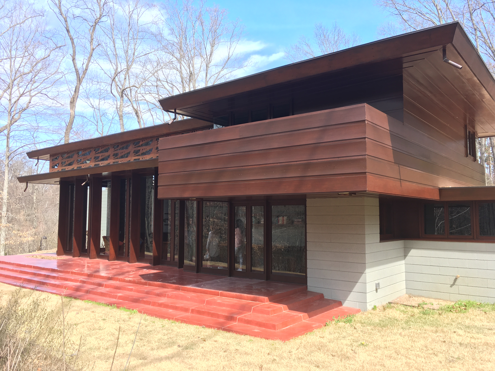
A Frank Lloyd Wright building transported and completely reconstructed.
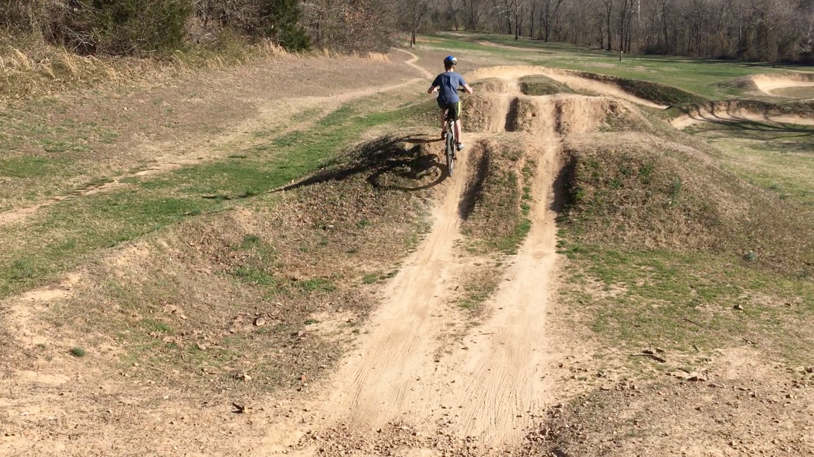
A great jump park.
The Black Hills
Both my parents have family in the Black Hills so we have take a number of family trips overt the years. It's a 12 hour drive from KC, but the mountains (actual) and scenery are worth it.
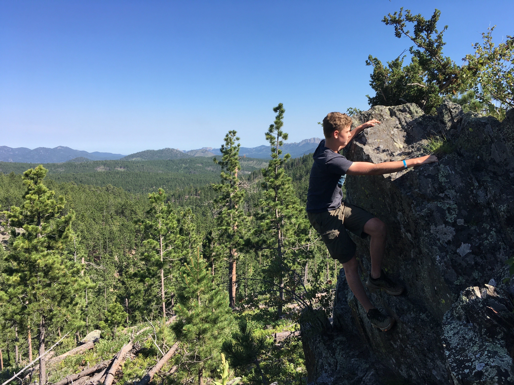
There are cliffs like this all around that are really fun to scramble up and down.This yard has BASH preinstalled for scripting goodness.
The Southwest
I had never really been to any part of the Southwest until this past summer so I made sure to take a pitstop at the Grand Canyon. Worth.
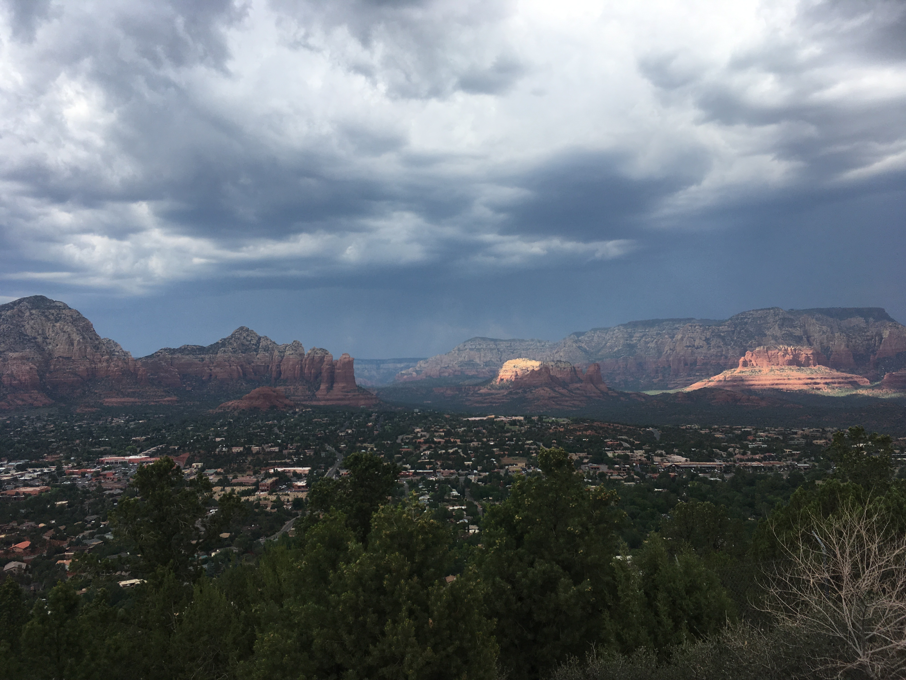
I could get used to this scenery.
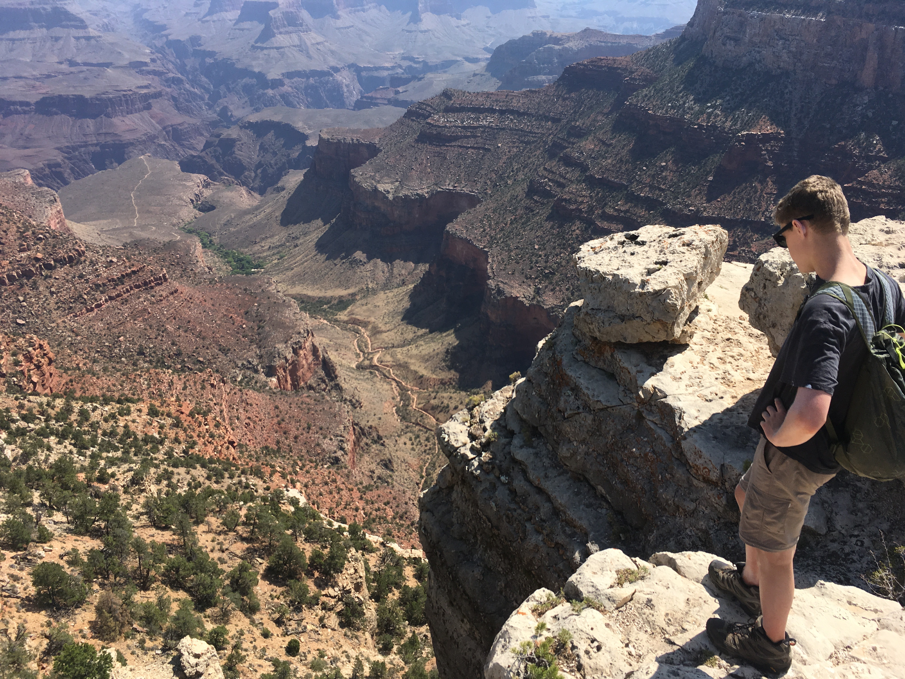
One thing people don't tell you about the Grand Canyon: It's big. But like, really.
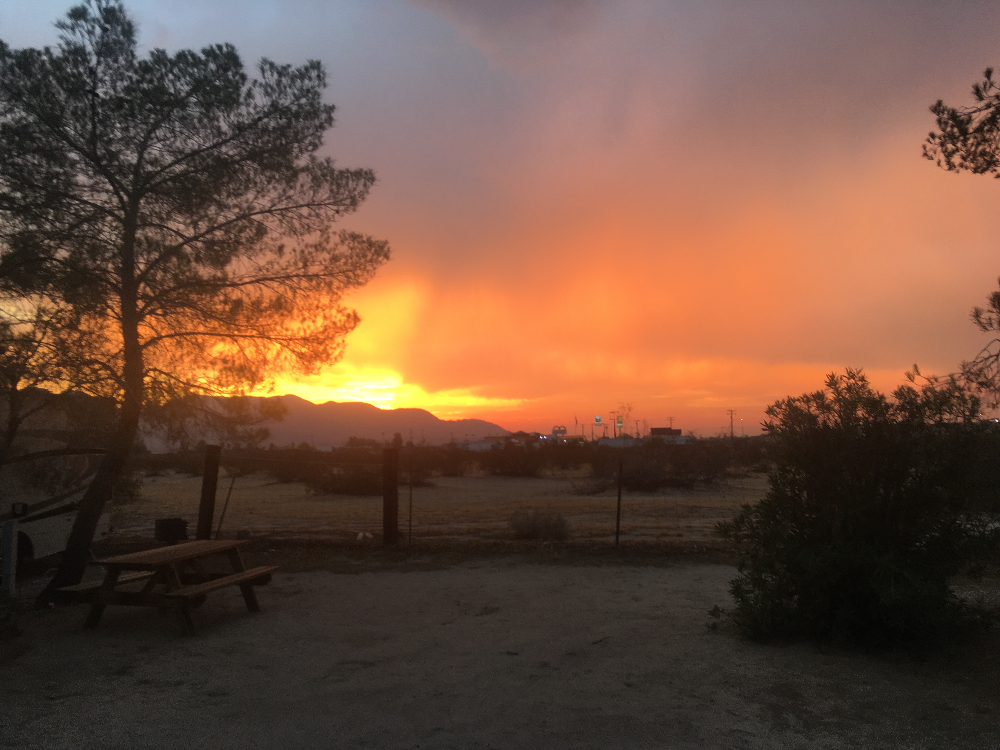
Not a fire. Just the sun. I think it got up > 115 if I remember correctly.
San Francisco
My brother and my niece live in San Francsisco. It's a true megalopolis with tons of things to do and weather that never gets too hot or too cold.
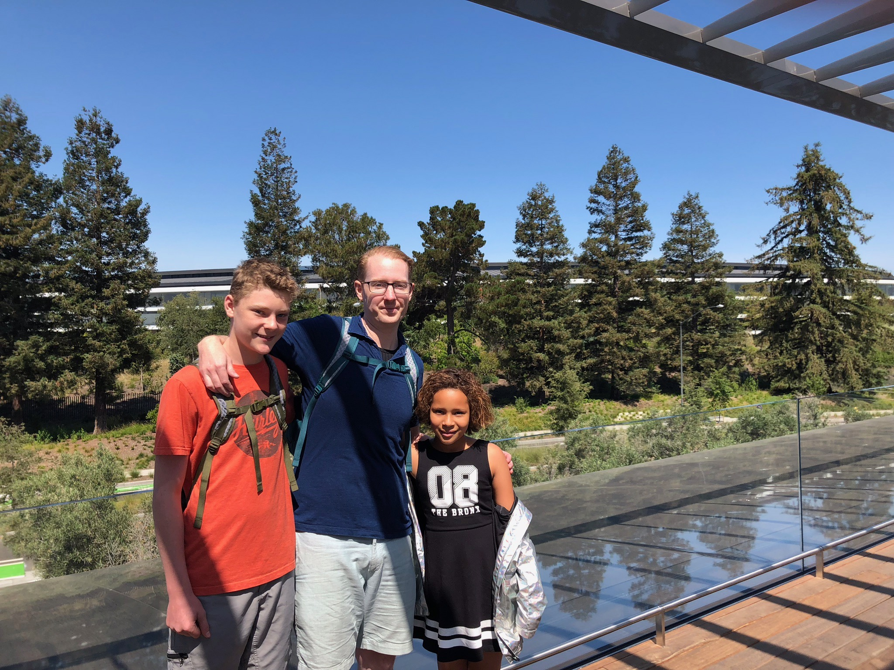
At the Apple Store right across the new HQ.
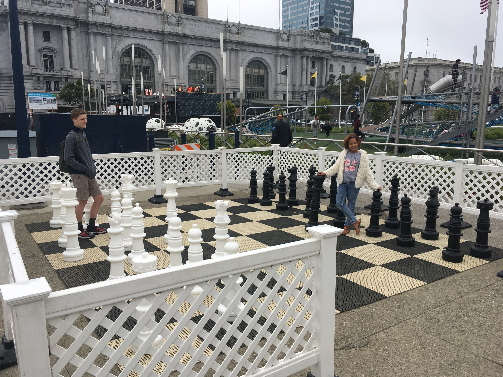
Downtown San Francisco
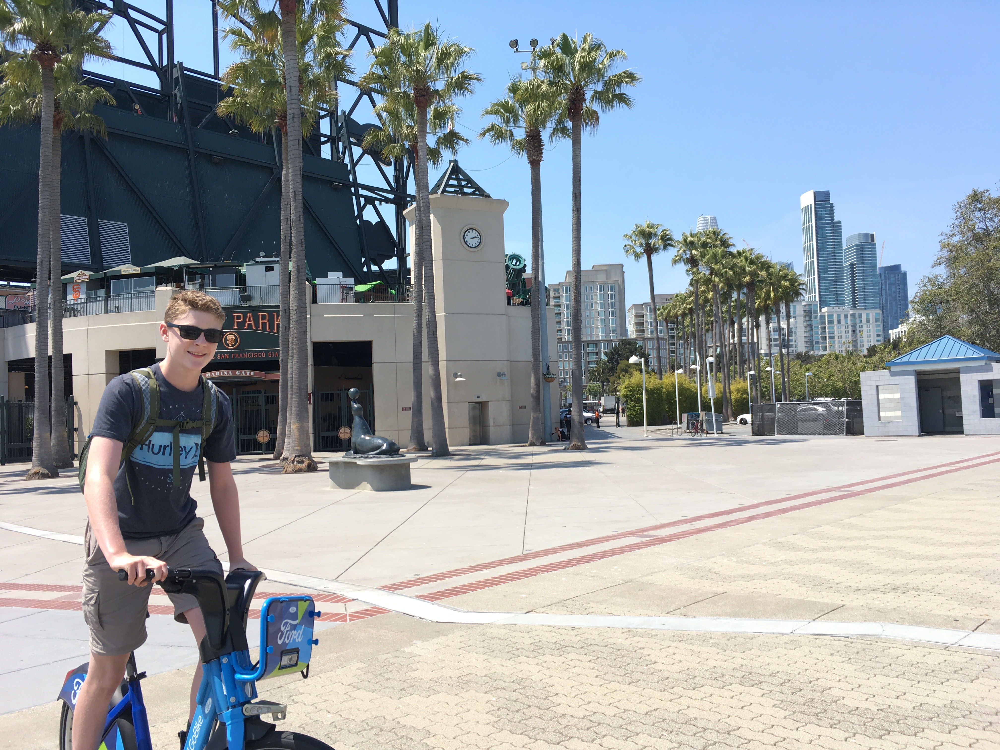
Great public transportatoin and pretty friendly to bikes.
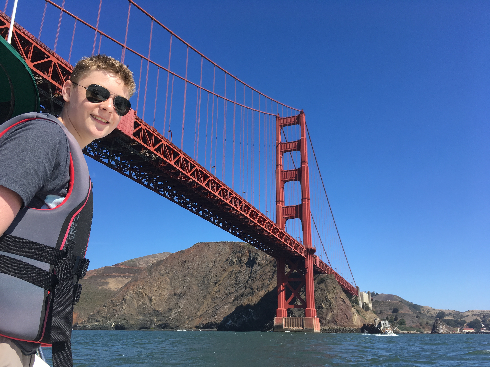
More of a red gate bridge if you ask me.
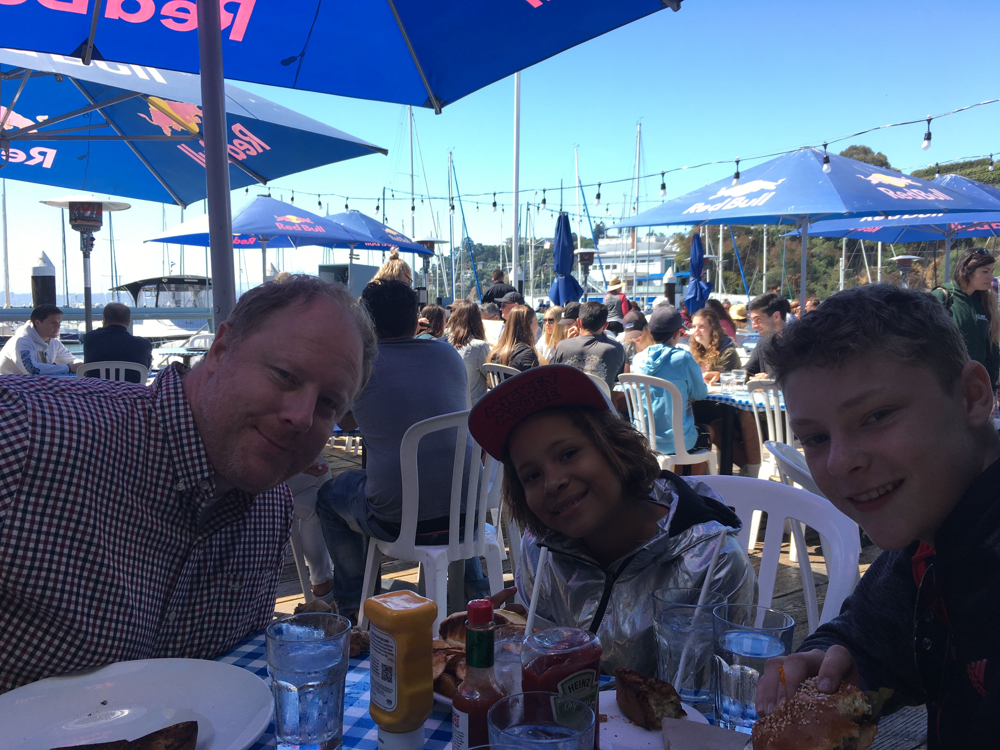
Across the bay at a restaurant you can dock your boat to.